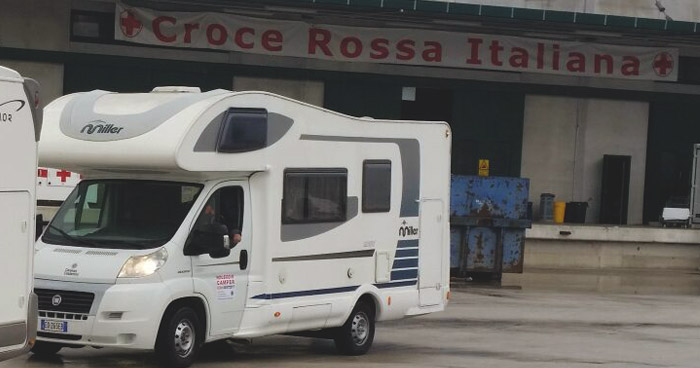
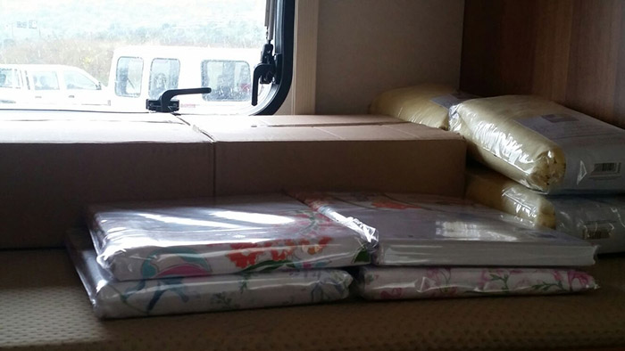

20 camper per gli allevatori colpiti dal terremoto nel Centro Italia

I camper trasformati in moduli abitativi provvisori

L'urgenza degli allevatori di rimanere a contatto con i loro terreni è da considerarsi prioritaria, soprattutto per favorire la ripresa di un territorio fondato anche sulla pastorizia
Terremoto Centro Italia: Amatrice, primo giorno di scuola